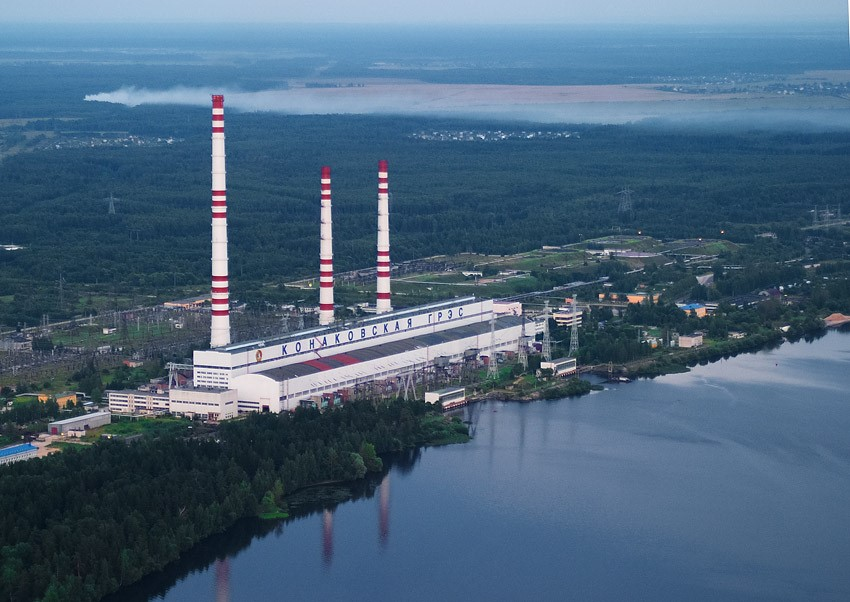
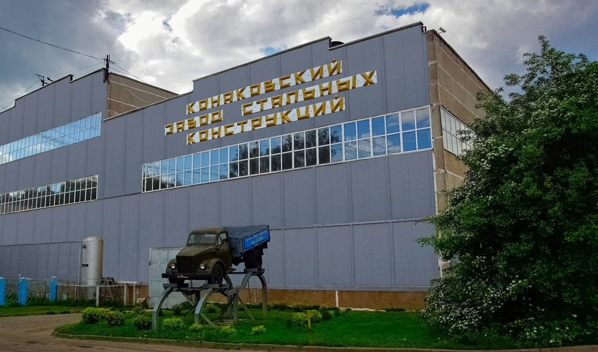
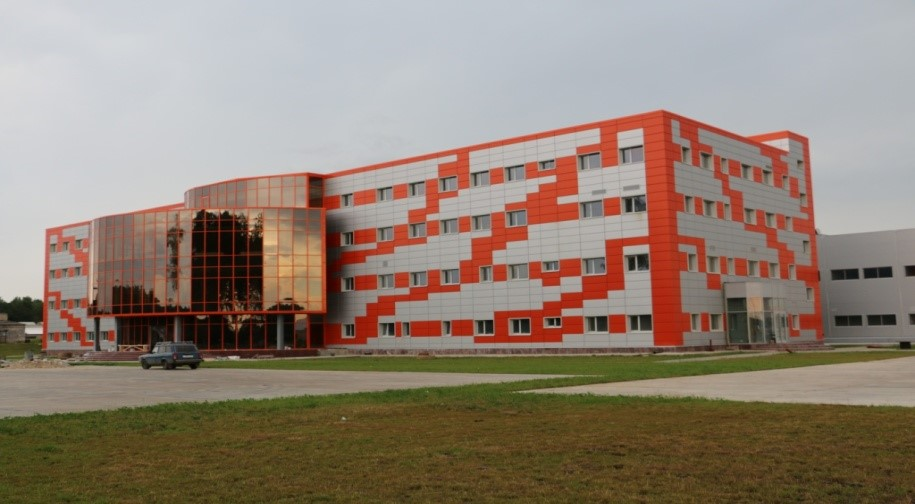
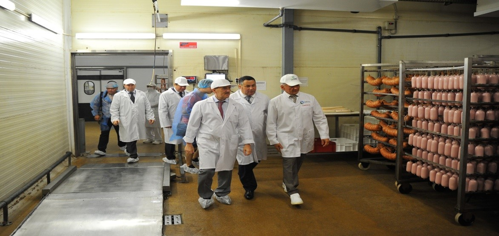
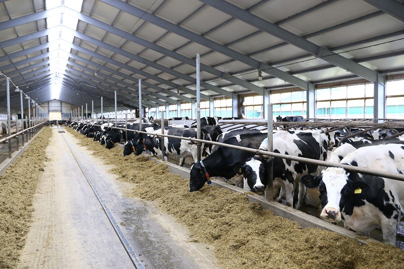
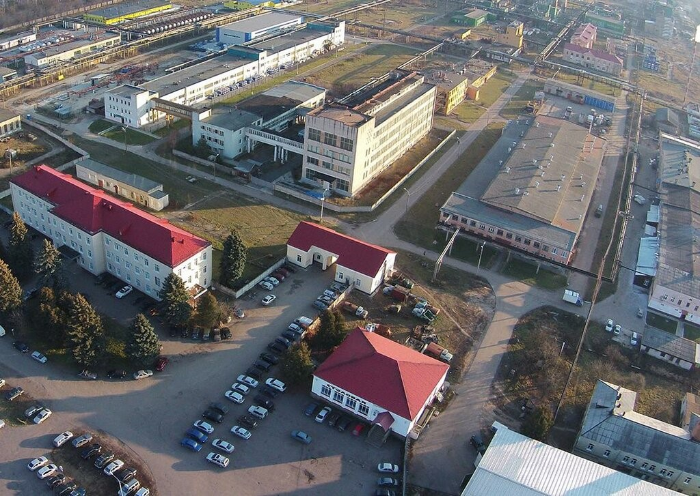

Конаково
1.Конаковская ГРЭС

Самое крупное предприятие Конаково – Конаковская ГРЭС. Конаковская ГРЭС является электрической станцией федерального значения, одной из крупнейших ГРЭС России. В настоящее время вырабатываемая компанией электрическая энергия составляет 1% от общего количества производимой энергии в России. Она расположена на берегу Иваньковского водохранилища. Установленная электрическая мощность ГРЭС, которая состоит из 8 энергетических блоков с турбоагрегатами, равна 2520 МВт, а установленная тепловая мощность – 120 Гкал/ч. Основным топливом станции является природный газ, а резервным – мазут. Производимая Конаковской ГРЭС электроэнергия передается по линиям электропередачи напряжением 220, 330 и 500 кВ, а также по опытно-промышленной линии 750 кВ.
2.ОАО "Энергостальконструкция»-Завод стальных конструкций

АО «Энергостальконструкция» - одно из ведущих предприятий РФ в энергетической отрасли, основано в 1969 году. Сегодня, ОАО «ЭСК» - современный завод по изготовлению решетчатых и многогранных опор ЛЭП и жестких анкерных линий к ним и металлоконструкций, оснащенный новейшим европейским оборудованием. За годы деятельности завода изготовлено более полтора миллиона тонн металлоконструкций для строительства важнейших объектов энергетики.
3.АО «Агрофирма Дмитрова Гора»



ООО "Дмитрогорский мясоперерабатывающий завод" - ведущее отраслевое предприятие Тверской области, которое входит в число лучших пищевых промышленных предприятий РФ. ООО «Дмитрогорский молочный завод» является одним из ведущих предприятий Тверской области по производству молочной продукции.
4.ОАО "Редкинский опытный завод"

Редкинский опытный завод на протяжении нескольких десятков лет являлся производителем уникальной химической продукции для предприятий авиационной и космической промышленности. Завод сотрудничал с ведущими учеными свыше 50-ти научно-исследовательских институтов страны и 1960-1980 годах был крупнейшим опытным предприятием Министерства химической промышленности и его Главного управления тяжелого органического синтеза. Старейшее предприятие, отметившее в 2002 году 100 лет со дня основания. Завод ориентирован на проведение опытных работ в области химической промышленности и имеет большой опыт проведения работ практически во всех областях. В последние годы получили развитие работы по производству лекарственных субстанций и готовых лекарственных средств Завод имеет собственный проектно-конструкторский отдел, ориентированный на разработку и проектно-сметной документации на создание и реконструкцию химических установок во взрывопожароопасном производстве. Продукция Редкинского опытного завода поставляется на экспорт.